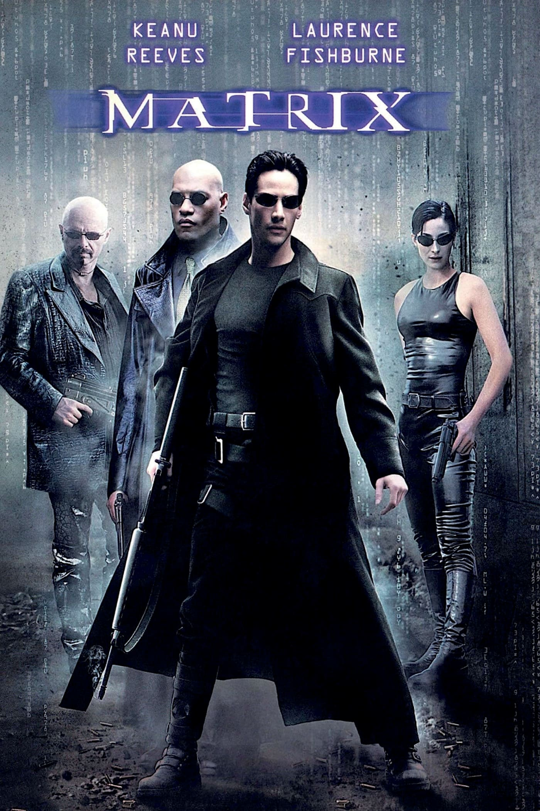
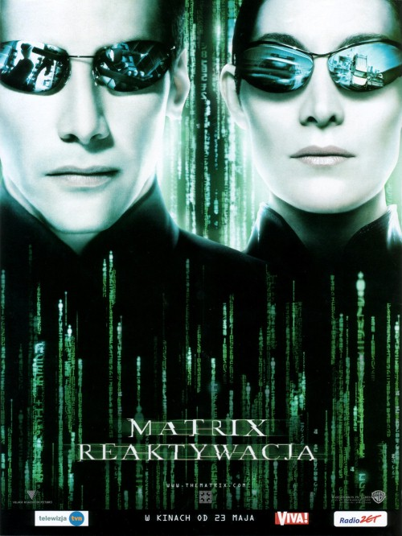
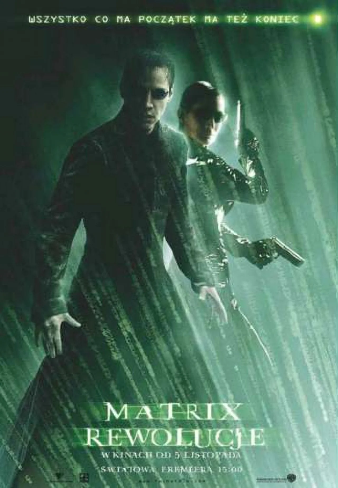
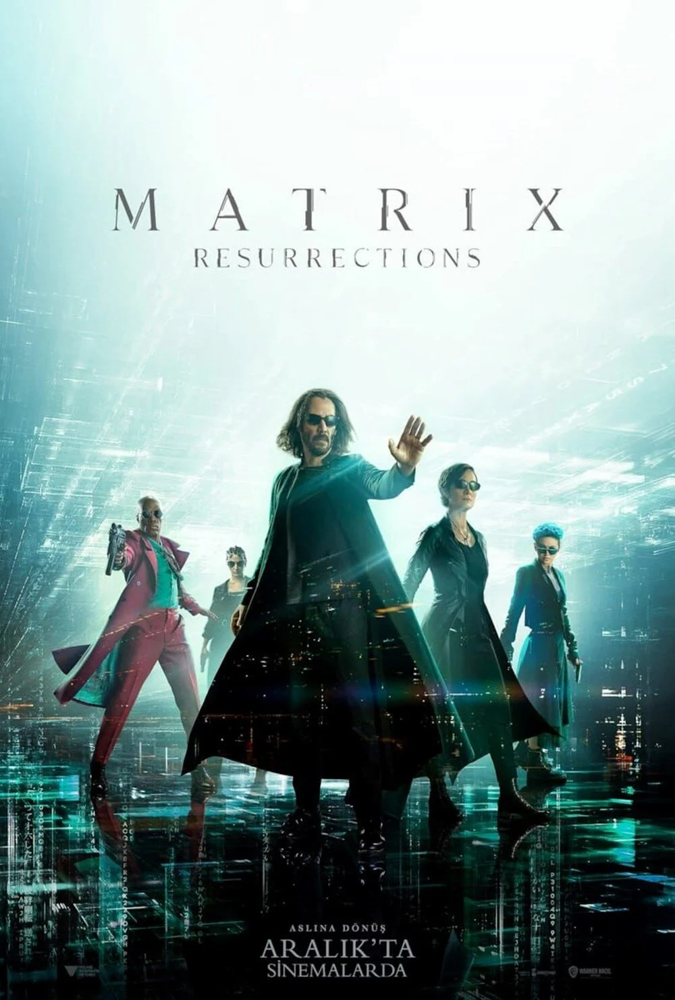

Matrix
Początek trylogii, super film, niesamowity pomysł, świetne sceny walki i muzyka.
Fabuła
Thomas A. Anderson (Keanu Reeves) wiedzie podwójne życie. Zawodowo pracuje jako programista komputerowy w firmie MetaCortex, natomiast w życiu prywatnym jest hakerem komputerowym o pseudonimie „Neo”. Seria niewytłumaczalnych i zaskakujących zjawisk prowadzi go do kontaktu z grupą, na czele której stoi tajemniczy Morfeusz (Laurence Fishburne), uznawany przez władze za przestępcę i terrorystę. Wyjaśnia on Neo, czym jest Matrix, po czym oferuje pokazanie prawdziwego, niezakłamanego świata. Tam Neo na własne oczy przekonuje się, że żyje w postapokaliptycznym świecie. Ludzie wymyślili sztuczną inteligencję (SI), jednakże maszyny wyrwały się spod ich kontroli i zwróciły się przeciwko twórcom. Aby odciąć je od energii słonecznej, ludzie spowili niebo czarnym smogiem. Decyzja ta okazała się fatalna w skutkach – maszyny jako źródło energii wybrały ludzi, więżąc ich w programie zwanym Matriksem, symulującym świat z roku 1999. Istnieje jednak grupa ludzi niepodłączonych. Wśród nich jest między innymi załoga statku Nabuchodonozor, której kapitanem jest Morfeusz.
Morfeusz uwalnia Neo z Matriksa, wierząc, że jest on Wybrańcem, przepowiedzianym przez Wyrocznię wybawicielem i człowiekiem, który zakończy wojnę i przyniesie pokój. Sam Neo jest raczej sceptyczny wobec swoich umiejętności – pod okiem Morfeusza stopniowo uczy się jednak naginać i łamać reguły systemu komputerowego.
Dla maszyn ludzie wyzwoleni, nieprzynoszący energii, a jedynie uwalniający innych, są szkodnikami. Istnieje specjalna grupa programów, zwanych agentami. Na ich czele stoi agent Smith. Są oni strażnikami Matriksa, ścigają i zabijają osoby, których wirtualne ego wysyłane jest za pomocą pirackiego sygnału. Agenci odznaczają się nadnaturalną siłą i szybkością, są zdolni do unikania pocisków i przejmowania ciała dowolnego człowieka żyjącego w Matriksie. Są nieśmiertelni, lecz zasady ich bytu i zachowań zostały ograniczone regułami programu komputerowego. Wybraniec mógłby je jednak złamać i pokonać agentów.
Neo spotyka się z Wyrocznią, która wskazuje mu jego ścieżkę. Będzie on musiał podjąć decyzję – wybór pomiędzy zachowaniem swojego życia a uratowaniem Morfeusza. Wyrocznia sugeruje, że Neo wybrańcem nie jest, przynajmniej jeszcze nie. Wkrótce potem Cypher, jeden z członków załogi Nabuchodonozora, preferujący ignorancję zamiast prawdy, zdradza Morfeusza, którego pojmują agenci. Chcą wydobyć z niego kod dostępu do Syjonu – jedynego miasta ludzi, do którego maszyny nie mają dostępu. Neo dokonuje wyboru przepowiedzianego przez wyrocznię – wyrusza wraz z Trinity na ratunek Morfeuszowi. Udaje się go uwolnić i bezpiecznie doprowadzić do wyjścia z Matriksa. Na przeszkodzie po raz kolejny staje jednak agent Smith – po ucieczce Trinity przestrzeliwuje kabel, pozwalający na bezpieczne przejście do prawdziwego świata. Neo podejmuje walkę z agentem, który ginie w obecnym ciele pod kołami pociągu. Wkrótce pojawia się w nowym wcieleniu, zmuszając Neo do ucieczki.
W tym samym czasie w prawdziwym świecie maszyny przeprowadzają atak na statek Morfeusza. Nie może on odpalić ładunków niszczących układy elektroniczne w sytuacji, gdy Neo jest podłączony do Matriksa. Sytuację komplikuje fakt, że niedoszły Wybraniec zostaje postrzelony i zabity przez agenta. Trinity nie może pogodzić się ze śmiercią ukochanego – jej pocałunek w prawdziwym świecie przywraca go do życia w Matriksie. Zmartwychwstały Neo doznaje olśnienia, staje się wybrańcem.

Matrix Reaktywacja
Druga część serii, no majstersztyk po rpostu, palce lizać, wyśmienite walki i wspaniała muzyka. Idealna kontynuacja.
Fabuła
Akcja rozgrywa się kilka miesięcy po zakończeniu pierwszej części. Morfeusz, Trinity i Neo idą na spotkanie z innymi kapitanami, na którym dowiadują się, że maszyny kopią tunel, by dostać się do ostatniego bastionu ludzkości – Syjonu. Morfeusz postanawia, że jeden statek zostanie, by czekać na kontakt z Wyrocznią, a reszta wróci zgodnie z rozkazem do Syjonu. Na tym też spotkaniu Neo dostaje przesyłkę od Smitha (który nie funkcjonuje już jako agent i po pierwszej części nie używa już tego tytułu), która jest symbolem „wolności”. Tymczasem w Syjonie dochodzi do wielkiego zgromadzenia, na którym przemawia Morfeusz. Oznajmia prawdę o zagrożeniu ze strony maszyn, jednak jego przemowa sprawia, że ludzie mają nadzieję na ocalenie. Po krótkim czasie Neo otrzymuje przesyłkę od Wyroczni, nakłaniającą do spotkania. Gdy Wybraniec rozmawia z Wyrocznią, ta mówi mu, że musi odnaleźć źródło Matriksa. Potrzebny jest do tego Klucznik. Gdy Wyrocznia odchodzi, pojawia się Smith ze swoimi klonami i informuje o połączeniu między bohaterami – Neo i byłym Agentem. Widowiskowa walka kończy się wraz z momentem ucieczki głównego bohatera trylogii. Gdy Nabuchodonozor ląduje w Syjonie w celu doładowania, dowódca obrony Syjonu – komandor Lock – karci Morfeusza za rozkaz zostawiania jednego z okrętów.
Po naładowaniu akumulatorów Nabuchodonozor odlatuje z Syjonu, co jeszcze bardziej irytuje komandora, lecz tym razem Morfeusz otrzymał pozwolenie Rady. Kiedy załoga statku przez długi czas nie daje znaku życia, Rada zaczyna się niepokoić. Postanawiają wysłać dwa inne statki na poszukiwania Nabuchodonozora.
Tymczasem Neo, Morfeusz i Trinity spotykają się z programem o nazwie Merowing, który ma w posiadaniu Klucznika, jednak ten nie chce im go oddać. Niezadowoleni spotykają żonę Merowinga, Persefonę, która gotowa jest zdradzić męża i pomóc im. W zamian chce, by Neo ją pocałował, i mimo iż Trinity nie kryje frustracji, Wybraniec godzi się. Persefona wskazuje im miejsce pobytu Klucznika. Po chwili zjawia się Merowing; Trinity i Morfeusz rzucają się do ucieczki, Neo zaś walczy z ludźmi Francuza. Trinity, Morfeuszowi i Klucznikowi udaje się uciec samochodem, ale gonią ich ludzie Merowinga. Do pościgu dołączają się także Agenci, jednak całej trójce udaje się uciec.
Klucznik opowiada im o budynku, w którym znajduje się źródło Matriksa, do którego będą musieli się włamać. Załoga Nabuchodonozora oraz statków, które zadeklarowały chęć pomocy, postanawiają dostać się do owego budynku. Aby tego dokonać, muszą przeprowadzić szybką i sprawną akcję odcięcia zasilania w kilku kwartałach. W czasie wykonywania zadania ginie kilka osób, których statek został zaatakowany przez mątwy.
Neo udaje się jednak dostać do źródła Matriksa, gdzie spotyka Architekta. Ten mówi mu, że Neo jest już szóstym wybrańcem, kolejną anomalią systemu. Wskazuje Neo dwoje drzwi: jedne prowadzą do ocalenia Syjonu, drugie do ocalenia Trinity. Neo decyduje się ratować Trinity. Ona jednak ginie. Neo, korzystając ze swoich mocy, przywraca ją do życia.

Matrix Rewolucje
AAAAAAAAAAAAAA Kocham matrix rewolucje, rewelacyjne walki, muzyka wspaniała i końcówka przepiękna. Kontynuacja z 2022 niepotrzebna.
Fabuła
Maszyny są coraz bliżej Syjonu. Neo wciąż pozostaje w śpiączce, mieszkańcy ostatniego bastionu ludzkości przygotowują się do ostatecznego starcia z maszynami. W tym czasie Trinity i Morfeusz udają się do Wyroczni, ta mówi im, że Neo znajduje się w miejscu, z którego może go zabrać tylko Kolejarz, ale zrobi to dopiero wtedy, gdy dostanie pozwolenie od swojego szefa, którym jest Merowing. Trinity, Morfeusz i Serafin udają się do „Piekła” – klubu należącego do Merowinga, aby prosić go o uwolnienie Neo. Merowing żąda za uwolnienie Wybrańca Oczu Wyroczni. Merowing drażni się chwilę z całą trójką, jednak wybucha zamieszanie, w którym Trinity przystawia mu broń do czoła, a ten nie mając wyjścia bez żadnych żądań nakazuje Kolejarzowi uwolnić Neo.
Wybraniec udaje się do Wyroczni, wiedząc, że ta jest tylko kolejnym programem stworzonym do kontrolowania ludzi. Wyrocznia mówi mu, że tej nocy Neo będzie musiał zmierzyć się z Agentem Smithem, który niedługo będzie tak potężny, że będzie mógł zniszczyć obydwa światy. Wyrocznia tłumaczy Wybrańcowi, że Smith został stworzony przez system, aby go zrównoważyć. Neo wierzy, że jest w stanie zakończyć wojnę, ale w tym celu musi się udać do miasta maszyn. W wyprawie towarzyszy mu Trinity.
Morfeusz, Niobe, Link i załoga „Młota” postanawiają wrócić do Syjonu i pomóc obrońcom. Jednak droga do ostatniego bastionu ludzi jest bardzo niebezpieczna, ponieważ maszyny opanowały wszystkie główne drogi. W tym czasie strażnicy przebijają się do Hangaru Syjonu, rozpoczyna się ostateczne starcie pomiędzy ludźmi a maszynami. Neo i Trinity są w drodze do miasta maszyn, lecz nie wiedzą, że na ich statku znajduje się Agent Smith kontrolujący ciało Bane’a. Dochodzi do starcia między Neo a Banem. Neo zostaje oślepiony, ale zabija Bane’a. W Syjonie trwa walka z maszynami, ludzie ponoszą straty, według komandora Locka upadek Syjonu jest tylko kwestią czasu.
Wybraniec i Trinity docierają do miasta maszyn, ich statek zostaje uszkodzony przez maszyny i rozbijają się. Neo udaje się przeżyć, ale Trinity ginie. Wybraniec napotyka maszynę Deus Ex Machina. Obiecuje maszynie, że zniszczy Smitha, w zamian za zakończenie wojny maszyn z ludźmi. Deus Ex Machina godzi się, a jednocześnie strażnicy atakujący Syjon zaprzestają działań wojennych. Obrońcy Syjonu są tym zdziwieni. Morfeusz domyśla się, że Neo rozpoczął walkę o przetrwanie ludzkości.
Neo zostaje podłączony do Matriksa, aby skonfrontować się ze Smithem. W pojedynku nie uczestniczą kopie Smitha, jedynie biernie go obserwujące. Spektakularna walka zbliża się ku końcowi, kiedy to Smith uderza ciałem Neo o ulicę, tworząc krater. Wewnątrz niego Agent, stojąc obok leżącego Wybrańca, wymienia wszelkie motywacje Neo do walki, nie rozumiejąc postępowania przeciwnika. Na pytanie: „Dlaczego?” Neo odpowiada: „Bo tak wybieram”. W tym momencie Wybraniec odrzuca Smitha, a ten wbija się w ścianę krateru, następnie atakuje Neo, który ostatecznie pada na ziemię. W tym momencie Smith zaczyna rozumieć, że to właśnie chwila spełnienia. Stwierdza: „Wszystko, co ma początek, ma swój koniec, Neo.” Kiedy to wymawia, Wybraniec z trudem i determinacją powstaje, a Smith zaczyna pojmować to, co się dzieje. Z obawy przed przeciwnikiem oddala się od niego, jednak ostatecznie podejmuje próbę nadpisania siebie na Neo.

Matrix Zmartwychwstania
No trochę żałosne bym powiedział... Ta seria nie potrzebowała kontnuacji, skok na kasę tylko. Wszystkie pozostałe 3 filmy biją ten na łeb i szyję :/
Fabuła
Jesteśmy tylko bateriami tej symulacji. Rozejrzyjcie się dookoła. Świat niby taki rozległy i wielki, a większość z was nawet nie widziało jego ułamka. Był ktoś z was kiedyś w kosmosie, widzieliście największe szczyny i dno morskie? No właśnie, większość to tylko opowieści znajomych, i filmy.
A co jeśli to tylko symulacja? Co jeśli drogi czytelniku jesteś tylko odbiorcą i tak naprawdę siedzisz teraz w fotelu w ośrodku, a sztuczne emocje i wspomnienia trafiają do twojej głowy? Nie zastanawiałeś się nigdy, dlaczego ludzie ponad 50 lat temu regularnie latali w kosmos, nawet zaczęły się loty turystyczne w kosmos ponad dekadę temu, a ostatnio nikt nawet o tym nie mówi i nie słyszał? Dlaczego tyle się mówi o super technologiach, supersamochodach a nigdy takiego nie miałeś? Co jeśli jesteś tylko pionkiem w tej grze, co jeśli ta gra nazywa się Roy?
Przemyślcie to.
I dlaczego znikneły budki telefoniczne? Jedyny sposób wyjścia został nam odebrany...
Argumenty kolegi to akurat kwintesencja kapitalizmu. Wyścig kosmiczny miał być pacyficzną przykrywką na możliwości lotów rakiet dalekiego zasięgu i ich udźwigu (atomówk zamiast lądownika).
Samochody itp.. skoro stare się świetnie sprzedaje to po co tracić pieniądze aby wymyślać nowe?
Bateryjkami jesteśmy bo nasza energia działania jest przeznaczona do spłat kredytów i podatków.
Masz racje. W sumie to chciałbym żeby ten Świat okazał się ułudą utkaną w naszych głowach. Niestety.. jest jak jest. A żeby zobaczyć że ziemia jest okrągła nie trzeba lecieć w kosmos, wystarczy wejść na jedną z najwyższych gór świata i widać zakrzywienie ziemi. Wiem bo widzielem. Może to mały ułamek tego co zobaczyć można, ale naprawdę widać. A może to tez program załadowany w moją głowę? Matrix zmienił moje podejście do kinematografii. Matrix zmienił podejście kinematografii do filmów. Wychowałem się na matrixie i czekam na propozycje czerwonej pigułki . Pozdro rocznik 85.
Sami widzicie że na tej planecie coraz bardziej jest parcie na kontrole, telewizje, sieci komórkowe oraz smartfony watche, przede wszystkim banki i płatności elektroniczne, a w przyszłości będą samochody elektryczne (obecnie mówi się o efekcie cieplarnianym głównie spowodowanym przez samochody osobowe, o ciężarówkach samolotach czy wojsku już sie nie mówi, następnie przez kryzys pandemii będą podwyższać ceny paliw wiadomo w jakim celu ).
Tak naprawdę nie znamy historii tego świata, wiemy to co widzieli nasi dziadkowie i ją nam przekazali jeśli zdążyli. Historia ta z książek której uczymy się w szkołach nie jest prawdziwa, zmieniana przez kontrolujących ta jak i z biblią.
